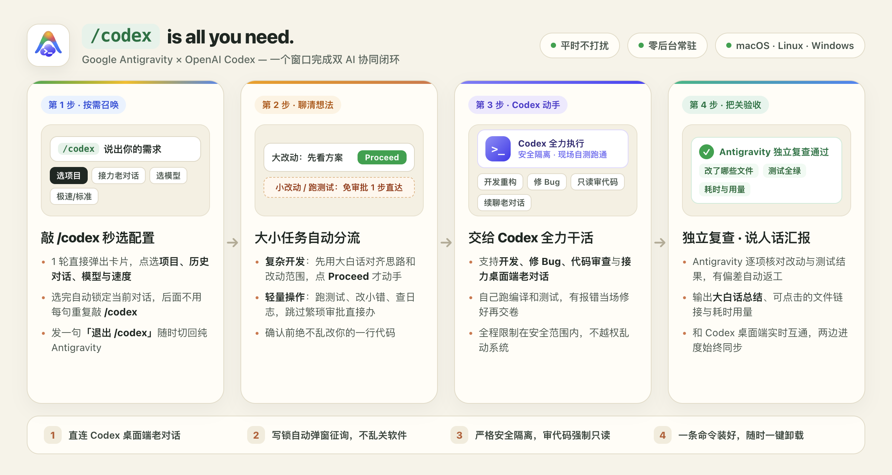
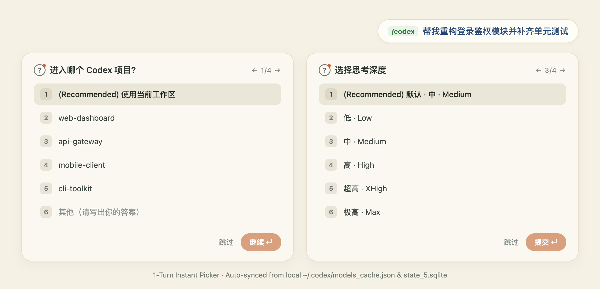

/codex is all you need.
留在 Antigravity 窗口里聊想法、定方案、把关结果； 需要动手开发、修 Bug、审代码或接力 Codex 老对话时，敲一个 /codex 就能直接交给它。

为什么要在 Antigravity 里操作 Codex？
告别两个客户端来回切窗口复制粘贴，也无需部署重型 MCP Server 或放开高危权限。
管 Why & What + 独立终审
- 发散思路、人话对齐需求边界与防坑清单
- 原生 ask_question 选择卡片与 implementation_plan.md [Proceed] 门禁
- 独立复核 git diff 与测试结果，不越权乱改业务源码
管 How + 现场自测闭环
- 自主完成多文件工程实现，贴合项目既有代码规范
- 在工作区现场跑通编译、Lint 与单元测试闭环后交卷
- 原位续聊（resume）继承完整历史与 Prompt 缓存，极速返修
四大核心能力
轻量、安全、开箱即用，深度打通本机 Codex 桌面端工作区。
按需触发 · 1 轮直出选单
日常对话零侵入；敲 /codex 第 1 轮直出 4 题选单（项目 / 模型 / 中英对照思考深度 / 极速与标准速度）。同对话自动锁定沿用，说「退出 /codex」随时切回。
Codex 桌面端项目与老对话无缝接力
只读读取 ~/.codex/state_5.sqlite 的真实项目与侧边栏对话名，show-session 承接历史上下文，默认原位 resume（遇桌面端写锁先征求同意，不同意则无损 fork）。
分级快车道 · 严守沙箱 · 红队审查
复杂开发走方案卡片门禁，轻量运维走 --prompt 快车道；默认 --approve-for-me 与严格 read-only 审查，内置 --adversarial 红队挑刺与 --base main 分支 Diff 审查。
白名单隔离 · 自动遥测 · 三平台 CI
默认 --ignore-user-config 降低开销，执行完自动汇总耗时、Token 与 git diff --stat；内置 doctor 一键体检与安全 cleanup-worktree，覆盖 Ubuntu/macOS/Windows CI。

一键安装与环境体检
支持 --dry-run 预演与 --uninstall 干净卸载，零第三方运行依赖。
git clone https://github.com/19zbhy/antigravity-codex.git
cd antigravity-codex
./install.sh --dry-run # optional: preview changes first
./install.sh
~/.gemini/config/plugins/codex-collaborator/skills/codex/scripts/run-codex.sh doctorgit clone https://github.com/19zbhy/antigravity-codex.git
cd antigravity-codex
.\install.ps1 -DryRun # optional: preview changes first
.\install.ps1
pwsh -NoProfile -File "$HOME\.gemini\config\plugins\codex-collaborator\skills\codex\scripts\run-codex.ps1" doctor高频使用场景
敲一次 /codex 锁定配置，后续消息直接自然语言沟通。
复杂功能 / 重构
输入 /codex + 需求，选定项目与模型，审阅 Antigravity 生成的方案卡片后点 Proceed 交给 Codex 一次交付。
接力 Codex 老对话
选完 Codex 项目后直接点选侧边栏同名历史对话，自动承接上下文并原位续聊，切回 Codex App 立刻可见更新。
红队审查 / 随时退出
说「对抗式审查相对 main 的改动」触发只读红队审计；说「退出 /codex」立刻解除锁定切回纯 Antigravity。
常见问题
1. 平时不用 /codex 的普通对话会变慢或消耗额外上下文吗？
不会。日常对话 100% 由 Antigravity 原生处理；仅预载约 150 tokens 的极简选单快照用于 1 轮出卡片，完整技能文档与历史对话列表只在调用 /codex 时才加载。
2. 同一个对话需要每句都敲 /codex 吗？中途想关掉怎么办？
不需要。首次选完后本对话自动锁定沿用；再次敲 /codex 可重新切换项目、会话或模型；发「退出 /codex」即可解除锁定切回纯 Antigravity。如需全局停用，可在 Antigravity 自定义页面关闭 codex-collaborator。
3. 续聊老对话时提示“被 Codex 桌面端占用”怎么办？
Codex 桌面端会对最近打开过的线程持有独占写锁（already has an active writer）。插件绝不会偷偷关闭你的软件，而是弹窗让你二选一：同意优雅关闭 Codex 桌面端并原位续聊（--quit-app-on-lock），或不关闭并无损 fork 出新对话继续。
4. 在 Antigravity 里续聊后，Codex 桌面端能看到更新吗？
能。原位 resume 会把新回合直接写回 Codex 桌面端的原对话，且两边读写的是磁盘上同一份源码；配合 init-shared 生成的 .agents/state.md，切回独立 Codex 时也能立刻感知最新进展。
5. 可以继承 Codex 老对话历史，但只让 Gemini（Antigravity）自己改代码吗？
完全可以。先用 /codex 选定项目和老对话让 Antigravity 通过 show-session 读完历史上下文，再发一句「退出 /codex，接下来由你直接改」，Gemini 就会带着刚才继承的上下文直接干活，不再调用 Codex CLI。
6. 整个协同流程里，Antigravity 和 Codex 各自负责什么？
Antigravity 负责前期发散沟通、写人话任务书、异常协调与最终 diff 终审；Codex CLI 负责所有实际的源码修改、终端命令执行与编译/Lint/单测现场闭环验证。
7. 为什么首次调用需要点一次 Always Allow？沙箱安全吗？
安装脚本会把执行器路径替换为你的本机字面量绝对路径，首次放行 Always Allow 后即可免重复确认。脚本绝不传 --dangerously-bypass-approvals-and-sandbox：写任务严格使用 --approve-for-me（workspace-write），审查任务严格使用 -s read-only。
8. 支持 Windows、系统代理或自定义第三方模型 Provider 吗？
全部支持。项目同时提供原生 PowerShell 执行器（run-codex.ps1）与 Bash 执行器（run-codex.sh），默认白名单透传 [features].respect_system_proxy；当检测到 ~/.codex/config.toml 配了非 openai 的自定义 model_provider 时，会自动加载完整配置。